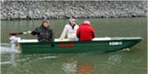

boat and motor tests
|  |
How a K MAXXI boat is like with a Torqeedo engine?
I always welcome an engine development that is environment friendly and promises such a great output which can save life in the case of life-danger. On the stormy Balaton, Lake Velence the self-developed catamaran-form ensures a great stability. The question is: which speed can a catamaran achieve with an electric engine?
The Interservice Company offered a test opportunity with a Torqeedo electric engine on the 06.02.2007. The test took place at the Háros bay, without wind, at 5°C. We tested the types of Travel 801 and Cruiser 2.0, which has an external battery.
We experienced at first sight that was not so slow as the average electric engine. It has a dynamic acceleration and a maximum speed which the little electric engines can't achieve at all. Specially the Torqeedo Cruiser 2.0 gives the feeling you could cross the Balaton in all directions with a K MAXI Party, vagy egy K MAXXI Joker. It came as a surprise to me that this engine apart from loading gave a minimal difference in speed.
| legkissebb
terhelés boat of weight: 180 kg motor+akku: 70 kg driver: 110 kg max speed: 9,6 km/h |
legnagyobb
terhelés boat of weight: 180 kg motor+akku: 70 kg driver+passengers: 521 kg max speed: 9,6 km/h |
| K MAXXI | legkissebb terhelés 360 Kg | legnagyobb terhelés 771 kg |
| Travel 801 full speed | 6,8 km/h | 6,8 km/h |
| Cruiser 2.0 full speed | 9,6 km/h | 8,8 km/h |
Compared with our previous petrol engine test we can see that the Torqeedo Cruiser with 3 person can give an output of a 4 PS petrol engine. In the tables below a 4 PS petrol engine and the Torqeedo Cruiser are compared.
| motor | 110 kg | 196 kg | 291 kg | 421 kg | 521 kg |
| Torqeedo Cruiser | 9,6 km/h | 9,5 km/h | 9 km/h | 8,7 km/h | 8,8 km/h* |
| half speed | 6,6 km/h | 6,5 km/h | 5,9 km/h | 5,3 km/h | 4,7 km/h |
| 4 PS 4 takt petrol engine | 15 km/h | 12,5 km/h | 9,5 km/h | 9,3 km/h | 9,2 km/h |
GPS-el mért eredmények. *Az utasok elhelyezkedése befolyásolhatja az elérhetõ maximális sebességet.
| A motorokról információt ad: Pápai Ferenc Intersevice Kft. www.mercuryintersevice.hu 30 966-0956 |
With regards Imre Juharos 30 9788-120 |